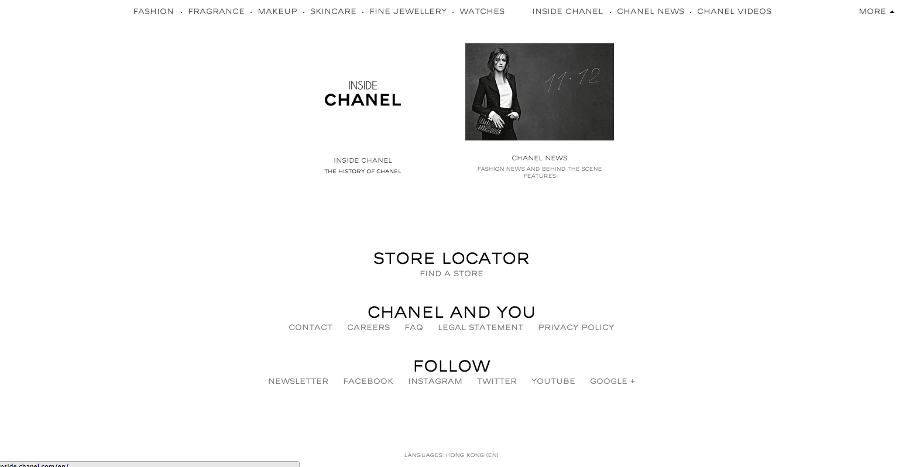
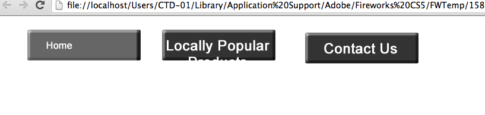

At first we planned to make our subpages similar to the wireframe above, but we realised that our subpages are
We actaully did quite a bit of research on the "look" of the website. Some of the websited we looked at were Dior, Chanel and Sasa
We noticed that websites like these give such a look that satisifies the viewvers. it makes them trust it. The colors are used in the right manner. If i was a customer of these websites, whether they were famous or not, I would have no problems buying anything I wanted online.
we really liked the colors and the overall outlook of this website because this was something we were looking for

These were some of the websites we looked at to get the idea of a "trustable" website

Sasa wasn't a good idea to look at because we weren't looking for something very gawdy or colorful, so we rather looked at the wbsite in a negative way than positive way.
1. To find images of the products
2. Add them to Dreamweaver
3. Find the information of the products such as the price, quantity and the brand names
4. Add links to the images so that all of the above information is on a different page when the viwers click on the image
1. Made the template
2. Found the images of the products
3. Added the images to Dreamwevaer
Mr.Chiu taught us how to make animated buttons. By animated, I mean when we put the cursor on the button, it's no longer highlighted, and when the cursor is on the button, it's higlighted.
We first drew a box and entred the text for the button we wanted.

The banner will be same size and same place.
We will be using the font sertig for the entire website.
We will pretty much use black .
We will be using the same font.
Black
Top middle
Our Products. Local Products, Local Benefits, About us
Yes.
Once the audience click on the navigation bar, it'll change its colour so they'll know where they are.
We made a template that will be the same for most of the pages excpet the homepage. Each subpage will have the categories, the search bar,language bar and the menu bar.

At first we planned to make our subpages similar to the wireframe above, but we realised that our subpages are
We actaully did quite a bit of research on the "look" of the website. Some of the websited we looked at were Dior, Chanel and Sasa
We noticed that websites like these give such a look that satisifies the viewvers. it makes them trust it. The colors are used in the right manner. If i was a customer of these websites, whether they were famous or not, I would have no problems buying anything I wanted online.
ight="228" width="969"/>We first made a box and labeled it as "home" and then basically copied the first button and made another 2 with different labels. After that, we customized the look of the buttons and gave the higlight functions and the font. 
Lastly, we linked the buttons to the right file so that when we click on the button, it takes us to where we want to.
We have our main content of the website as "Our products" "Local Products" ........
As we click on them, each of the content takes us to different page.
For example: This page is "Local Products'', this is showing the products that are locally famous and the peole who tend to
like the products more in hong kong.

It's a similar case here, Clicking on a link takes us to the place where we would like it to go.
We recently made the template for the pictures that we would like to click and they'll show the information about the products that are present on the page.